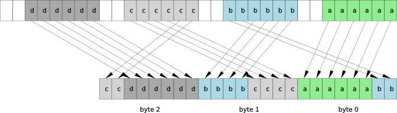

| Author: | Wojciech Muła |
|---|---|
| Added on: | 2016-09-17 |
| Updated on: | 2018-11-24 (fixed pseudocode mistake, spotted by Günther Foidl) |
Both base64 coding and decoding algorithms can be vectorized, i.e. SIMD instructions can be utilized, gaining significant speed-up over plain, scalar versions. I've shown different vectorization approaches in a series of articles:
AVX-512 is the recent extension to the Intel's ISA, unfortunately the extension is split into several subextensions. In the last article from the list I described usage of subextension AVX512BW (Byte-Word), at the moment of writing both articles AVX512BW was not available.
However, in 2016 on the market has appeared processors having subextension AVX512F (Foundation). Among many advantages of AVX512F there is one serious problem: lack of instructions working at byte and word level. The minimum vector element's size is 32 bits.
This article is a study of base64 algorithms realisation with foundation instructions AVX512F, major contributions are:
The text is split into four parts:
As I don't want to repeat myself too much, please refer to the linked articles for other algorithms for SSE and AVX2 and their analysis.
2016-12-18 note: in the initial version of this text I wrongly assumed order of input words, Alfred Klomp noted that the standard imposes a specific order. Today's change fixes this error.
Lack of byte-level instructions forces to use SWAR techniques on 32-bit vector's elements. Following operations are needed in both encoding and decoding:
In case of SSE, AVX2 and AVX512BW the points 1st & 2nd are performed by single instruction like pcmpgtb (SSE intrinsic _mm_cmpgt_epi8). Likewise, the equivalent of the 3rd operation is single instruction paddb (SSE intrinsic _mm_add_epi8).
Important note: input vectors for the core part of base64 algorithms contain bytes less than 128, i.e. the most significant bit isn't set.
The SWAR trick of unsigned comparison for greater or equal is based on following equation:
x + 0x80 - constant = 0x80 + (x - constant)
The assumption is that both x and constant are less than 0x80. If x >= constant then the result of the expression is greater or equal to 0x80, less than 0x80 otherwise. It means that the most significant bit indicates the result of comparison.
Let see a sample AVX512F code which compares input vector with constant = 26.
const __uint8_t constant = 0x80 - 26; // 102 = 0x66 const __m512i x = load data somehow const __m512i constant = _mm512_set1_epi32(0x66666666); const __m512i result = _mm512_add_epi32(x, constant);
Such code requires following instructions:
Once we have a result of comparison we can easily build:
In case of base64 masks are used to conditionally set some constants, thus depending on a constant value masks of different width are needed.
A 1-bit value require just one shift right.
// left MSBs const __mm512i MSB = _mm512_and_epi32(result, _mm512_set1_epi32(0x80808080)); // put MSB at the desired position, for example 3rd const __mm512 mask = _mm512_srli_epi32(MSB, 8 - 3);
Building a 7-bit mask requires also a shift and a subtract.
// left MSBs const __mm512i MSB = _mm512_and_epi32(result, _mm512_set1_epi32(0x80808080)); // mask = MSB - (MSB >> 7) // 0x80 - 0x01 = 0x7f // 0x00 - 0x00 = 0x00 const __mm512 mask = _mm512i_sub_epi32(MSB, _mm512_srli_epi32(MSB, 7));
An 8-bit mask is simply a 7-bit mask merged with the MSB.
// left MSBs const __mm512i MSB = _mm512_and_epi32(result, _mm512_set1_epi32(0x80808080)); // mask = MSB | (MSB - (MSB >> 7)) // 0x80 | (0x80 - 0x01) = 0x80 | 0x7f = 0xff // 0x00 | (0x00 - 0x00) = 0x00 const __mm512 tmp = _mm512i_sub_epi32(MSB, _mm512_srli_epi32(MSB, 7));
Summing things up: building a mask always require masking MSB and shift. Depending on the mask's width it would require an additional bit-and or bit-or.
The operation for a single 8-bit number is defined as follows:
(a + b) & 0xff
While adding two vectors of 8-bit numbers we must disallow propagating carry bits across byte boundaries. This requires two major steps:
Pseudocode for 8-bit numbers.
uint8_t add(uint8_t a, uint8_t) { const uint8_t a_06 = a & 0x7f; const uint8_t b_06 = b & 0x7f; const uint8_t a_7 = a & 0x80; const uint8_t b_7 = b & 0x80; const uint8_t tmp = a_06 + b_06; const uint8_t sum = tmp ^ a_7 ^ b_7; return sum; }
As it was said above, inputs for the algorithms are smaller than 128, thanks to that some masking is not needed and calculating the final sum is simpler. Following C++ procedure adds a vectors of 7-bit numbers and 8-bit numbers.
// returns packed (a[i] + b[i]) & 0xff // assertion a[i] < 0x80, b[i] can be any value __m512i _mm512_add_epu8(const __m512i a, const __m512i b) { const __m512i b06 = _mm512_and_si512(b, packed_byte(0x7f)); const __m512i sum = _mm512_add_epi32(a, b06); // merge the 7th bit of b with sum return _mm512_ternarylogic_epi32(packed_byte(0x80), b, sum, 0x6a); }
The procedure requires two logic instructions and one addition, it uses two constants.
Sample C++ codes use two macros: packed_dword and packed_byte. The first macro fills all 32-bit elements of vector with given value, the second one fills all bytes with a value. The macros are used just for better readability, both use intrinsic _mm512_set1_epi32.
Base64 encoding consists following steps:
Since AVX512F lacks of byte-level shuffling, loading data can be accomplished with a gather instruction. The gather does a parallel lookup in given table, indices are stored in vector's elements. Gather is significantly faster than individual loads, especially when it touches a small number of cache lines. In this case single gather would touch at most two cache lines.
An input is sequence 48 bytes, or twelve 32-bit lanes. The layout of an input:
[PPPO|OONN|NMMM|LLLK|KKJJ|JIII|HHHG|GGFF|FEEE|DDDC|CCBB|BAAA] 11 10 9 8 7 6 5 4 3 2 1 0
The result vector's layout:
[.PPP|.OOO|.NNN|.MMM|.LLL|.KKK|.JJJ|.III|.HHH|.GGG|.FFF|.EEE|.DDD|.CCC|.BBB|.AAA] 15 14 13 12 11 10 9 8 7 6 5 4 3 2 1 0
The 4th byte of each lane is not important.
Vector of indices contains a sequence of multiplies of 3: [0, 3, 6, 9, 12, ... and so on]. Loading data is then performed by a single instruction; please note that the last argument of _mm512_i32gather_epi32, scale, is 1.
static const uint32_t input_offsets[16] = { 0*3, 1*3, 2*3, 3*3, 4*3, 5*3, 6*3, 7*3, 8*3, 9*3, 10*3, 11*3, 12*3, 13*3, 14*3, 15*3 }; const __m512i input_gather = _mm512_loadu_si512(reinterpret_cast<const __m512i*>(input_offsets)); for (...) { const __m512i in = _mm512_i32gather_epi32(input_gather, (const int*)(input), 1); // ... }
Although the gather-based loading is pretty simple and straightforward, the instruction's latency is really huge — it's 15 cycles.
A vectorized approach loads 64 bytes, where only 48 bytes are used, and performs all shifting and shuffling within registers. AVX512F offers shuffling instruction vpermd (_mm512_permutexvar_epi32), which works at 32-bit words level and can move words across lanes.
The algorithm:
Load 64 bytes:
[PPPO|OONN|NMMM|LLLK|KKJJ|JIII|HHHG|GGFF|FEEE|DDDC|CCBB|BAAA] 11 10 9 8 7 6 5 4 3 2 1 0
The 48-byte array could be split into four 12-byte subarrays:
t1 = [D2 D1 D0 C2|C1 C0 B2 B1|B0 A2 A1 A0] x 4
word 2 word 1 word 0
12-byte subarray
Each 12-byte array is then placed in a separate 128-bit lane. This is done by _mm512_permutexvar_epi32. Note the order of words: 0, 1, 1, 2.
t2 = [D2 D1 D0 C2|C1 C0 B2 B1|C1 C0 B2 B1|B0 A2 A1 A0] x 4
Shift bytes C right by 16 bits (_mm512_mask_srli_epi64). Now bytes A and C are at correct places.
t3 = [.. .. D2 D1|D0 C2 C1 C0|C1 C0 B2 B1|B0 A2 A1 A0] x 4
Shift bytes D and B left by 8 bit (_mm512_slli_epi64). And now these bytes are also at the correct position.
t4 = [.. D2 D1 D0|C2 C1 C0 ..|C0 B2 B1 B0|A2 A1 A0 ..] x 4
Merge results from 3rd and 4th steps (_mm512_ternarylogic_epi32). The 3rd byte of each word will be omitted by a lookup procedure, thus no masking is needed.
t5 = [.. D2 D1 D0|.. C2 C1 C0|C0 B2 B1 B0|.. A2 A1 A0] x 4
An excerpt from sample code.
const __m512i tmp1 = _mm512_loadu_si512(input + i); const __m512i tmp2 = _mm512_permutexvar_epi32( _mm512_set_epi32(11, 10, 10, 9, 8, 7, 7, 6, 5, 4, 4, 3, 2, 1, 1, 0), tmp1 ); const __m512i tmp3 = _mm512_mask_srli_epi64(tmp2, 0xaa, tmp2, 16); const __m512i tmp4 = _mm512_slli_epi64(tmp3, 8); const __m512i tmp5 = _mm512_ternarylogic_epi64(_mm512_set1_epi64(0x00ffffff), tmp4, tmp3, BIT_MERGE);
A single 32-bit words layout:
[????????|ccdddddd|bbbbcccc|aaaaaabb]
An expected output is:
[00dddddd|00cccccc|00bbbbbb|00aaaaaa]
Where a, b, c and d are bits of individual 6-bit words. The question mark denotes random, unimportant data.
Unfortunately this step can't use any fancy AVX512F instruction, a series of shifts followed by a bit merge is the only solution. The bit merge is done by the ternary logic instruction.
template <int shift, uint32_t mask> __m512i merge(__m512i target, __m512i src) { __m512i shifted; if (shift > 0) { shifted = _mm512_srli_epi32(src, shift); } else { shifted = _mm512_slli_epi32(src, -shift); } return _mm512_ternarylogic_epi32(_mm512_set1_epi32(mask), shifted, target, 0xca); } __m512i unpack(const __m512i in) { // [????????|ccdddddd|bbbbCCCC|aaaaaaBB] // ^^ ^^^^^^^^ ^^ // lo lo hi hi // [00000000|00000000|00000000|00aaaaaa] __m512i indices = _mm512_and_si512(_mm512_srli_epi32(in, 2), packed_dword(0x0000003f)); // [00000000|00000000|00BB0000|00aaaaaa] indices = merge<-12, 0x00003000>(indices, in); // [00000000|00000000|00BBbbbb|00aaaaaa] indices = merge< 4, 0x00000f00>(indices, in); // [00000000|00CCCC00|00BBbbbb|00aaaaaa] indices = merge<-10, 0x003c0000>(indices, in); // [00000000|00CCCCcc|00BBbbbb|00aaaaaa] indices = merge< 6, 0x00030000>(indices, in); // [00dddddd|00CCCCcc|00BBbbbb|00aaaaaa] indices = merge< -8, 0x3f000000>(indices, in); return indices; }
Number of constants: 6.
Number of instructions:
Total: 12 instructions.
A lookup procedure considers five ranges assigned to characters: 'A'-'Z', 'a'-'z', '0'-'9', '+' and '/'. The procedure associates a range with shift value, a constant that added to the input value gives a proper ASCII code.
The simplest algorithm incrementally calculates shift, pseudocode shows the idea.
char lookup(uint8_t i) { uint8_t shift = 'A'; shift ^= mask_7bit(i >= 26) & 6; shift ^= mask_8bit(i >= 52) & 187; shift ^= mask_7bit(i >= 62) & 17; shift ^= mask_7bit(i >= 63) & 29; return (shift + i) & 0xff; // add modulo 256 }
The elementary operation is building a mask according to comparison result, the methods to do this are described earlier.
As we see, masks for all but one constants can be 7-bit. However, we could split constant 187 into MSB and lower part. The lower part contributes in shift, while the MSB will be used to adjust sum shift + i. This solution has one important advantage, the sum would never wrap, and plain addition can be used.
Rewritten algorithm.
char lookup(uint8_t i) { uint8_t shift = 'A'; shift ^= mask_7bit(i >= 26) & 6; shift ^= mask_7bit(i >= 62) & 17; shift ^= mask_7bit(i >= 63) & 29; cmp_MSB = MSB(i >= 52); mask = MSB - (MSB >> 7); // inlined mask_7bit // Note: order of updating shift isn't important shift ^= mask & 59; // 187 & 0x7f uint8_t sum = shift + i; return sum ^ cmp_MSB; }
const uint8_t XOR_ALL = 0x96; __m512i lookup_incremental_logic(const __m512i in) { __m512i shift = packed_byte('A'); __m512i c0, c1, c2, c3; const __m512i MSB = packed_byte(0x80); // shift ^= cmp(i >= 26) & 6; c0 = _mm512_and_si512(_mm512_add_epi32(in, packed_byte(0x80 - 26)), MSB); c0 = _mm512_sub_epi32(c0, _mm512_srli_epi32(c0, 7)); c0 = _mm512_and_si512(c0, packed_byte(6)); // shift ^= cmp(i >= 52) & 187; c1 = _mm512_and_si512(_mm512_add_epi32(in, packed_byte(0x80 - 52)), MSB); const __m512i c1msb = c1; c1 = _mm512_sub_epi32(c1, _mm512_srli_epi32(c1, 7)); c1 = _mm512_and_si512(c1, packed_byte(187 & 0x7f)); // shift ^= cmp(i >= 62) & 17; c2 = _mm512_and_si512(_mm512_add_epi32(in, packed_byte(0x80 - 62)), MSB); c2 = _mm512_sub_epi32(c2, _mm512_srli_epi32(c2, 7)); c2 = _mm512_and_si512(c2, packed_byte(17)); // shift ^= cmp(i >= 63) & 29; c3 = _mm512_and_si512(_mm512_add_epi32(in, packed_byte(0x80 - 63)), MSB); c3 = _mm512_sub_epi32(c3, _mm512_srli_epi32(c3, 7)); c3 = _mm512_and_si512(c3, packed_byte(29)); shift = _mm512_ternarylogic_epi32(shift, c0, c1, XOR_ALL); shift = _mm512_ternarylogic_epi32(shift, c2, c3, XOR_ALL); // produce the result return _mm512_xor_si512(_mm512_add_epi32(in, shift), c1msb); }
Number of constants: 10.
Number of instructions:
Total 24 instructions.
An expression like shift ^= cmp(...) & const might be expressed with ternary logic. This transformation makes the above procedure slightly shorter, four bit-ands are replaced with two ternary logic instructions.
__m512i lookup_incremental_logic_improved(const __m512i in) { using namespace avx512f_swar; __m512i shift; __m512i c0, c1, c2, c3; const __m512i MSB = packed_byte(0x80); /* s m c | shift ^ (mask & constant) ------+-------------------------- 0 0 0 | 0 0 0 1 | 0 0 1 0 | 0 0 1 1 | 1 1 0 0 | 1 1 0 1 | 1 1 1 0 | 1 1 1 1 | 0 -> 0x78 */ const uint8_t XOR_AND = 0x78; // shift ^= cmp(i >= 26) & 6; // shift ^= cmp(i >= 52) & 187; // shift ^= cmp(i >= 62) & 17; // shift ^= cmp(i >= 63) & 29; c0 = _mm512_cmpge_mask7bit(in, packed_byte(0x80 - 26)); c1 = _mm512_and_si512(_mm512_add_epi32(in, packed_byte(0x80 - 52)), MSB); const __m512i c1msb = c1; c1 = _mm512_sub_epi32(c1, _mm512_srli_epi32(c1, 7)); c2 = _mm512_cmpge_mask7bit(in, packed_byte(0x80 - 62)); c3 = _mm512_cmpge_mask7bit(in, packed_byte(0x80 - 63)); shift = _mm512_ternarylogic_epi32(packed_byte('A'), c0, packed_byte(6), XOR_AND); shift = _mm512_ternarylogic_epi32(shift, c1, packed_byte(187 & 0x7f), XOR_AND); shift = _mm512_ternarylogic_epi32(shift, c2, packed_byte(17), XOR_AND); shift = _mm512_ternarylogic_epi32(shift, c3, packed_byte(29), XOR_AND); // produce the result return _mm512_xor_si512(_mm512_add_epi32(in, shift), c1msb); }
The vectorized lookup uses in fact the linear search, but a kind of binary search can be used:
Pseudocode for scalar inputs shows the idea.
char lookup(uint8_t i) { uint8_t shift = 0; uint8_t value = 0; // 1st step if (x >= 52) { // 0-9, + or / shift = '0' - 52; value = 62; shift2 = '+' - 62; } else { // A-Z or a-z shift = 'A'; value = 26; shift2 = 'a' - 26; } // 2nd step if (i >= value) { shift = shift2; } // 3rd step: fixup for / uint8_t mask; if (i == 63) mask = 29; else mask = 0; shift ^= mask; // produce result: add modulo the input and the shift shift06 = shift & 0x7f shift7 = shift & 0x80 return (i + shift06) ^ shift7; }
The C++ implementation simply replaces all ifs with merge operations.
const uint8_t BIT_MERGE = 0xca; __m512i lookup_binary_search(const __m512i in) { using namespace avx512f_swar; __m512i cmp1_mask; __m512i shift; __m512i shift_step2; __m512i cmp2_mask; __m512i cmp2_value; __m512i cmp_63_mask; // 1st step // cmp1_mask = cmp(i >= 52) // shift = bit_merge(cmp1_mask, '0' - 52, 'A') // cmp2_value = bit_merge(cmp1_mask, 62, 26) // shift_step2 = bit_merge(cmp1_mask, '+' - 62, 'a' - 26) cmp1_mask = _mm512_cmpge_mask8bit(in, packed_byte(0x80 - 52)); shift = _mm512_ternarylogic_epi32(cmp1_mask, packed_byte('0' - 52), packed_byte('A'), BIT_MERGE); cmp2_value = _mm512_ternarylogic_epi32(cmp1_mask, packed_byte(0x80 - 62), packed_byte(0x80 - 26), BIT_MERGE); shift_step2 = _mm512_ternarylogic_epi32(cmp1_mask, packed_byte('+' - 62), packed_byte('a' - 26), BIT_MERGE); // 2nd step // cmp2_mask = cmp(i >= cmp_value) // shift = bit_merge(cmp2_mask, shift, shift_step2) cmp2_mask = _mm512_cmpge_mask8bit(in, cmp2_value); shift = _mm512_ternarylogic_epi32(cmp2_mask, shift_step2, shift, BIT_MERGE); // 3rd step // cmp_63_mask = cmp(i >= 63) // shift = shift ^ (cmp_63_mask & 29) cmp_63_mask = _mm512_cmpge_mask7bit(in, packed_byte(0x80 - 63)); shift = _mm512_ternarylogic_epi32(shift, cmp_63_mask, packed_byte(29), 0x78); // add modulo 256 return _mm512_add_epu8(in, shift); }
Number of constants: 10.
Number of instructions:
Total 22 instructions.
Fortunately result vector doesn't require any post-processing and can be stored directly.
_mm512_storeu_si512(ptr, result);
Base64 decoding consists following steps:
Symmetrically to storing encoded data, loading such data doesn't require any effort, it is a simple load.
__m512i in = _mm512_loadu_si512(input);
Unlike encoding, decoding has to care about input's validity. However, the scheme of decoding is similar to encoding: depending on byte range (A-Z, a-z, 0-9, + or /) a shift value is selected and the shift is added to byte forming a 6-bit value. If a byte doesn't match any range, then shift value is zero, denoting an invalid input.
Very important observation is that a valid input can't contains any extended ASCII characters, i.e. bytes should be less than 0x80. Before doing a lookup procedure the input bytes are reduced to 7-bit value. This leads to simpler code, as SWAR procedures don't have to deal with full 8-bit numbers. Information about invalid, extended ASCII chars is used during a validation step.
Pseudocode for decoding summing up the above observations.
uint8_t decode_byte(uint8_t byte) uint8_t shift = 0; // invalid value input = byte & 0x7f; // reducing range to 0..0x7f if (input >= 'A' && input <= 'Z') shift = -65; if (input >= 'a' && input <= 'z') shift = -71; if (input >= '0' && input <= '9') shift = 4; if (input == '+') shift = 19; if (input == '/') shift = 16; if (shift == invalid || (byte & 0x80)) // an invalid byte or an extended ASCII char report error // sum modulo 256, as shift can be less than 0 return (byte + shift) & 0xff; }
One of the most important part of procedure is range checking. Since we know how to express the relation >=, the range checking could be replaced with:
if (byte >= lo && !byte >= hi) // ...
This involves two additions and one and-not operation, followed by mask forming. And since building mask requires MSB value, we can use ternary logic to do all needed binary operations in one instruction:
const __m512i L = _mm512_add_epi32(a, packed_byte(lo)); const __m512i H = _mm512_add_epi32(a, packed_byte(hi)); // MSB = L & ~H & 0x80 const __m512i MSB = _mm512_ternarylogic_epi32(packed_byte(0x80), H, L, 0x20);
Equality comparison (required for chars '+' and '/') has surprisingly the same complexity as range checking, so the latter operation is used.
Adding shift and input uses arithmetic modulo 256.
uint8_t decode_byte(uint8_t byte) { uint8_t shift = 0; input = byte & 0x7f; // reducing range to 0..0x7f // determine shift mask1 = mask_8bit(input >= 'A' && !input >= 'Z' + 1) range_AZ = mask1 & -65; mask2 = mask_8bit(input >= 'a' && !input >= 'z' + 1) range_az = mask2 & -71; MSB = mask_1bit(input >= '0' && !input >= '9' + 1) range_09 = MSB >> 5; // value 4 mask3 = mask_7bit(input >= '+' && !input >= '+' + 1) plus = mask3 & 19; mask4 = mask_7bit(input >= '/' && !input >= '/' + 1) slash = mask4 & 16; shift = range_AZ | range_az | range_09 | plus | slash; // addition modulo 256 shift06 = shift & 0x7f; shift7 = shift & 0x80; result = (byte + shift) ^ shift7; // valid iff: shift is non-zero, input's MSB is zero non_zero_shift_7lower = shift06 + 0x7f; non_zero_shift_MSB = shift7; valid = (non_zero_shift_7lower | non_zero_shift_MSB) & ~input if (valid & 0x80 != 0x80) { // invalid byte or extended ASCII char report error } return result; }
The vectorized version of pseudocode, most binary operations were expressed with ternary logic instructions:
__m512i lookup_comparisons(const __m512i input) { const __m512i in = _mm512_and_si512(input, packed_byte(0x7f)); #define GET_RANGE_SHIFT_7BIT(shift, lo, hi) \ _mm512_and_si512(packed_byte(uint8_t(shift)), \ _mm512_range_mask_7bit(in, packed_byte(0x80 - (lo)), packed_byte(0x80 - (hi)))) #define GET_RANGE_SHIFT_8BIT(shift, lo, hi) \ _mm512_and_si512(packed_byte(uint8_t(shift)), \ _mm512_range_mask_8bit(in, packed_byte(0x80 - (lo)), packed_byte(0x80 - (hi)))) #define GET_RANGE_SHIFT_3RD_BIT(lo, hi) \ _mm512_range_3rd_bit(in, packed_byte(0x80 - (lo)), packed_byte(0x80 - (hi))) const __m512i range_AZ = GET_RANGE_SHIFT_8BIT (-65, 'A', 'Z' + 1); const __m512i range_az = GET_RANGE_SHIFT_8BIT (-71, 'a', 'z' + 1); const __m512i range_09 = GET_RANGE_SHIFT_3RD_BIT('0', '9' + 1); const __m512i char_plus = GET_RANGE_SHIFT_7BIT (19, '+', '+' + 1); const __m512i char_slash = GET_RANGE_SHIFT_7BIT (16, '/', '/' + 1); // shift = range_AZ | range_az | range_09 | char_plus | char_slash const uint8_t OR_ALL = 0xfe; const __m512i tmp = _mm512_ternarylogic_epi32(range_AZ, range_az, range_09, OR_ALL); const __m512i shift = _mm512_ternarylogic_epi32(char_plus, char_slash, tmp, OR_ALL); // (shift + input) & 0xff const __m512i shift06 = _mm512_and_si512(shift, packed_byte(0x7f)); const __m512i shift7 = _mm512_and_si512(shift, packed_byte(0x80)); const __m512i result = _mm512_xor_si512(_mm512_add_epi32(in, shift06), shift7); // validation const __m512i non_zero_7lower = _mm512_add_epi32(shift06, packed_byte(0x7f)); const __m512i MSB = packed_byte(0x80); const __m512i valid = _mm512_ternarylogic_epi32(non_zero_7lower, shift, input, 0x54); const auto mask = _mm512_cmpneq_epi32_mask(MSB, _mm512_and_si512(valid, MSB)); if (mask) { report_exception(input); } return result; }
And SWAR procedures for mask calculations:
// returns packed (a[i] >= lo and a[i] <= hi) ? 0x7f : 0x00; __m512i _mm512_range_mask_7bit(const __m512i a, const __m512i lo, const __m512i hi) { const __m512i L = _mm512_add_epi32(a, lo); const __m512i H = _mm512_add_epi32(a, hi); // MSB = L & ~H & 0x80 const __m512i MSB = _mm512_ternarylogic_epi32(packed_byte(0x80), H, L, 0x20); // MSB - (MSB >> 7) return _mm512_sub_epi32(MSB, _mm512_srli_epi32(MSB, 7)); } // returns packed (a[i] >= lo and a[i] <= hi) ? 0xff : 0x00; __m512i _mm512_range_mask_8bit(const __m512i a, const __m512i lo, const __m512i hi) { const __m512i L = _mm512_add_epi32(a, lo); const __m512i H = _mm512_add_epi32(a, hi); const __m512i MSB = _mm512_ternarylogic_epi32(packed_byte(0x80), H, L, 0x20); // MSB | (MSB - (MSB >> 7)) return _mm512_or_si512(MSB, _mm512_sub_epi32(MSB, _mm512_srli_epi32(MSB, 7))); } // returns packed (a[i] >= lo and a[i] <= hi) ? 0x04 : 0x00; __m512i _mm512_range_3rd_bit(const __m512i a, const __m512i lo, const __m512i hi) { const __m512i L = _mm512_add_epi32(a, lo); const __m512i H = _mm512_add_epi32(a, hi); const __m512i MSB = _mm512_ternarylogic_epi32(packed_byte(0x80), H, L, 0x20); return _mm512_srli_epi32(MSB, 5); }
The result of the lookup procedure is a vector of 32-bit lanes. Each lane has following layout:
[00dddddd|00cccccc|00bbbbbb|00aaaaaa]
Intermediate result:
[00000000|aaaaaabb|bbbbcccc|ccdddddd]
And finally, after byte swapping it is:
[00000000|ccdddddd|bbbbcccc|aaaaaabb]
Packing has exactly the same problems as unpacking step in encoding. Only shifts and bit-merges can be used. The code use the same template merge as encoding.
__m512i pack_improved(const __m512i in) { // in = |00dddddd|00cccccc|00bbbbbb|00aaaaaa| // t0 = |00000000|00000000|00000000|aaaaaa00| const __m512i t0 = _mm512_slli_epi32(masked(in, 0x0000003f), 2); // t1 = |00000000|00000000|00000000|aaaaaabb| const __m512i t1 = merge<12, 0x00000003>(t0, in); // t2 = |00000000|00000000|bbbb0000|aaaaaabb| const __m512i t2 = merge<-4, 0x0000f000>(t1, in); // t3 = |00000000|00000000|bbbbcccc|aaaaaabb| const __m512i t3 = merge<10, 0x00000f00>(t2, in); // t4 = |00000000|cc000000|bbbbcccc|aaaaaabb| const __m512i t4 = merge<-6, 0x00c00000>(t3, in); // t5 = |00000000|ccdddddd|bbbbcccc|aaaaaabb| const __m512i t5 = merge< 8, 0x003f0000>(t4, in); return t5; }
We can store 48 bytes using the scatter instruction, which saves 32-bit lanes at certain offsets [0, 3, 6, 9, and so on]; the vector of offset is exactly the same as encoding use.
According to the documentation, scatter stores items sequentially. Since indices are in ascending order, all 4th bytes of lane will be overwritten by data from the next lane.
_mm512_i32scatter_epi32(out, scatter_offsets, result, 1);
It is possible to do all shifting within registers, unfortunately there is no instruction allowing to shift across 64-bit boundary. This make decoding procedure more complicated than compared to the encoding counterpart.
The algorithm:
Input is treated as four 128-bit lanes. The layout of a lane:
[.. D2 D1 D0|.. C2 C1 C0|.. B2 B1 B0|.. A2 A1 A0] x 4 3 2 1 0
Shift fields C and A left by 8 bits (_mm512_mask_slli_epi32):
[.. D2 D1 D0|C2 C1 C0 ..|.. B2 B1 B0|A2 A1 A0 ..] x 4
Shift fields D, B and A right by 8 and 24 bits (_mm512_srlv_epi64):
[.. .. .. ..|D2 D1 D0 C2|.. .. B2 B1|B0 A2 A1 A0] x 4
Now only bytes C2 and C1 have to be moved to word 1, and this is an expansive procedure.
Shift the input vector right by a word (_mm512_alignr_epi32):
[E2 E1 E0 ..|.. D2 D1 D0|C2 C1 C0 ..|.. B2 B1 B0] x 4
^^^^^
only these bytes are needed
Shift and mask bytes C2 and C1 (_mm512_maskz_slli_epi32):
[.. .. .. ..|.. .. .. ..|C1 C0 .. ..|.. .. .. ..] x 4
Merge vectors from 3rd and 5th steps (_mm512_ternarylogic_epi32):
[.. .. .. ..|D2 D1 D0 C2|C1 C0 B2 B1|B0 A2 A1 A0] x 4
Shuffle words from 128-bit lanes to form 48-byte result (_mm512_permutexvar_epi32).
An excerpt from sample code.
const uint32_t BIT_MERGE = 0xca; const __m512i t1 = _mm512_mask_slli_epi32(packed, 0x5555, input, 8); const __m512i s2 = _mm512_setr_epi64(8, 24, 8, 24, 8, 24, 8, 24); const __m512i t2 = _mm512_srlv_epi64(t1, s2); const __m512i t3 = _mm512_alignr_epi32(t1, t1, 1); const __m512i t4 = _mm512_maskz_slli_epi32(0x2222, t3, 8); const __m512i m5 = _mm512_setr_epi32( 0x00000000, 0xffff0000, 0x00000000, 0x00000000, 0x00000000, 0xffff0000, 0x00000000, 0x00000000, 0x00000000, 0xffff0000, 0x00000000, 0x00000000, 0x00000000, 0xffff0000, 0x00000000, 0x00000000); const __m512i t5 = _mm512_ternarylogic_epi32(m5, t4, t2, BIT_MERGE); const __m512i s6 = _mm512_setr_epi32( 0, 1, 2, 4, 5, 6, 8, 9, 10, 12, 13, 14, // unused 0, 0, 0, 0); const __m512i t6 = _mm512_permutexvar_epi32(s6, t5);
A repository contains also lookup procedures use gather instructions. The procedures are pretty short and clean (no SWAR tricks), however they use quite large tables: encoding 4 * 4 * 64 bytes (1kB), decoding 4 * 4 * 256 (4kB).
And the most important fact is that performance of both procedures is worse than vectorized counterparts.
Sample programs from repository tests dozens of different variants of scalar, SSE and AVX2 implementations. I picked the best methods from scalar, SSE and AVX2 groups.
Test programs were compiled by GCC 5.3.0 and run on Knights Landing processor, model 7210.
Note that tests perform whole encoding/decoding procedures, thus memory transfers are included in results.
See all measurements. The best non-AVX512F procedures:
| procedure | AVX512 specific | time [s] | speed-up relative to ... | |||
|---|---|---|---|---|---|---|
| load | lookup | AVX2 | SSE | scalar | ||
| scalar | N/A | 0.58455 | 0.52 | 0.50 | 1.00 | |
| SSE | 0.29187 | 1.04 | 1.00 | 2.00 | ||
| AVX2 | 0.30332 | 1.00 | 0.96 | 1.93 | ||
| AVX512 | vectorized | vectorized | 0.12472 | 2.43 | 2.34 | 4.69 |
| vectorized | improved | 0.11348 | 2.67 | 2.57 | 5.15 | |
| gather | improved | 0.12745 | 2.38 | 2.29 | 4.59 | |
| vectorized | binary search | 0.12521 | 2.24 | 2.33 | 4.67 | |
| gather | 0.25674 | 1.18 | 1.14 | 2.28 | ||
See all measurements. The best non-AVX512F procedures:
| procedure | AVX512 specific | time [s] | speed-up relative to ... | |||
|---|---|---|---|---|---|---|
| lookup | store | AVX2 | SSE | scalar | ||
| scalar | N/A | 0.2289 | 0.36 | 0.54 | 1.00 | |
| SSE | 0.1234 | 0.67 | 1.00 | 1.85 | ||
| AVX2 | 0.0832 | 1.00 | 1.48 | 2.75 | ||
| AVX512 | vectorized | scatter | 0.0519 | 1.72 | 2.55 | 4.74 |
| vectorized | 0.0441 | 1.89 | 2.80 | 5.19 | ||
| gather | 0.0519 | 1.60 | 2.38 | 4.41 | ||
I've deliberately left two ideas aside:
This work wouldn't be possible without Daniel Lemire, who has gave me access to a brand new machine having Knights Landing CPU. I could do all experiments on a real processor. Daniel also shared some ideas about an early version of this text. Thank you!
Github repository contains all procedures and sample programs.